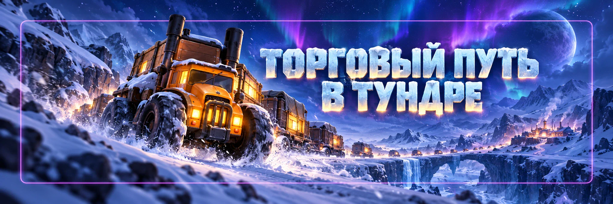

Торговый путь в тундре
Автор: SOVA58
Отправляем свои грузовики, защищаем груз, помогаем союзникам и выбираем выгодные цели для рейдов.
🚛 Свои грузовики
За день можно отправить до 4 грузовиков. Одновременно в пути могут находиться 2.
У каждого грузовика свой набор наград. Чем выше качество, тем ценнее может быть груз.
⭐ Обновление грузовика
Первое обновление нового грузовика бесплатное.
Дальше качество можно обновлять с помощью ваучеров грузовика, а если такой вариант доступен в игре, также за алмазы.
Ваучеры грузовика можно получать в Сражении альянсов.
🎯 Главное правило обновления
- бесплатное обновление используем всегда;
- смотрим, что лежит в грузе;
- если награды слабые, обновляем дальше за ваучеры;
- если выпал хороший груз, останавливаемся;
- алмазы используем только если это действительно оправдано.
🟡 Максимальное качество
Если несколько обновлений подряд не дают лучший грузовик, после серии обновлений можно получить гарантированный вариант максимальной редкости.
Но специально доводить каждый грузовик до максимума не обязательно. Сначала смотрим на сами награды.
📦 Смотрим не только на цвет
Перед отправкой оцениваем содержимое груза: фрагменты героев, материалы снаряжения, материалы губернатора, питомцев и другие редкие ресурсы.
Иногда грузовик более низкой редкости полезнее, если внутри лежат нужные именно вам предметы.
🛡️ Защита грузовика
Для сопровождения ставится отряд с героями и войсками.
Чем ценнее груз, тем сильнее должна быть защита. На лучший грузовик ставим сильный PvP-состав.
🤝 Помощь союзников
Можно попросить другого игрока альянса помочь с защитой грузовика. Сильный помощник заметно усложняет рейд противнику.
Самые ценные грузовики лучше отправлять с поддержкой сильных игроков.
👥 Помогаем другим
Не забывайте выставлять свой отряд помощи. Особенно полезно это сильным игрокам альянса.
⚔️ Рейды
Перед атакой смотрим четыре вещи:
- что можно украсть;
- героев защиты;
- войска;
- есть ли сильный помощник.
Не атакуем грузовик только потому, что он высокой редкости.
🎯 Как выбирать цель
Идеальная цель: хороший груз + слабая защита.
Лучше забрать чуть менее дорогой груз, который вы точно победите, чем потерять время на слишком сильного соперника.
🛡️ Повторные ограбления
Один грузовик может быть успешно ограблен ограниченное количество раз. После нескольких успешных рейдов он перестаёт быть доступен для новых нападений.
🔁 Если рейд не удался
Неудачная атака не равна успешному ограблению, но всё равно отнимает время.
Перед нападением оцениваем, реально ли мы сильнее, есть ли помощник и стоит ли груз риска.
🦸 Герои
Герои сопровождения не исчезают из остальных режимов игры. Но внутри Торгового пути сильных героев лучше распределять между своими отправками разумно.
Не ставьте лучшую тройку на слабый груз, если позже собираетесь отправить более ценный.
🔥 Когда отправлять лучший груз
Перед отправкой ценного грузовика:
- ставим сильную защиту;
- проверяем помощь союзников;
- убеждаемся, что нужные герои доступны;
- только потом запускаем маршрут.
💬 Опыт игроков
✅ Бесплатное обновление используем всегда.
✅ Ваучеры не тратим бездумно.
✅ Сначала смотрим награды, потом редкость грузовика.
✅ Лучший груз получает лучшую защиту.
✅ Перед рейдом проверяем не только хозяина, но и помощника.
✅ Сильным игрокам полезно выставлять хорошие отряды помощи.
✅ Не стоит тратить алмазы только ради красивого цвета грузовика.
✅ Лучше забрать гарантированную хорошую цель, чем разбиться об идеальную.
🚫 Частые ошибки
- крутить каждый грузовик до максимума;
- тратить алмазы без необходимости;
- смотреть только на цвет груза;
- отправлять ценный груз со слабой защитой;
- не использовать помощь союзников;
- атаковать сильного игрока ради красивых наград;
- игнорировать защитника-помощника;
- забывать отправить все доступные грузовики за день.
✅ Быстрая схема
🚛 появился грузовик → 🎟️ бесплатное обновление → 📦 смотрим награды → ⭐ решаем, обновлять дальше или нет → 🦸 ставим сильную защиту → 🤝 просим помощь → 🚚 отправляем.
👀 смотрим груз → ⚔️ проверяем защиту → 🤝 смотрим помощника → ✅ можем победить → 🔥 атакуем.
Главное
Не цвет грузовика решает, хороший он или нет.
Смотрим по порядку: 📦 награды → 🦸 защита → 🤝 помощник → 🎟️ стоимость обновления → ⚔️ шанс успешного рейда.